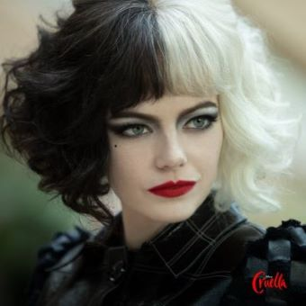

Cast
クルエラ・ド・ヴィル(エステラ・ヴォン・ヘルマン)/エマ・ストーン
傍若無人な天才肌で、幼い頃よりファッションデザイナーを夢見ている女性です。幼少期から問題行動が多く、教師との衝突が原因で転校する事となりました。成長して大人になってからは、自分の中に抑え込んでいた本性・クルエラを解放し、母を殺めた敵であるバロネスのショーを妨害するダークヒーローのような存在になっていきます。
バロネス男爵夫人/エマ・トンプソン
表向きは世界にその名を轟かせているカリスマファッションデザイナー。しかし、過去にはエステラの義母・キャサリンを崖から突き落として殺害、実の娘であるエステラをも自分の都合で殺そうとする残虐な顔を持っている女性です。
ジャスパー/ジョエル・フライ
母を失ったエステラが幼少期に出会ったストリートチルドレンです。以後、クルエラとなってからも行動を共にしています。エステラのデザイナーの夢を叶えようと仕事を持って来るなど、優しい一面を持っていて、エステラにとって1番の理解者でもあります。友人なのか手下なのかわからない距離感で付き合いを続けていきます。
ホーレス/ポール・ウォルター・ハウザー
ジャスパーと共に犯罪稼業で生活する中、エステラと出会ったもう1人の仲間です。少し鈍感な所もありますが、そのマイペースな性格は愛されていて、ジャスパーと共にエステラを支えて家族のように過ごしていきます。
